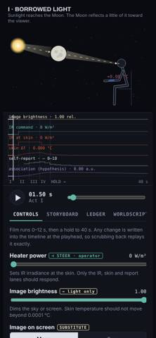
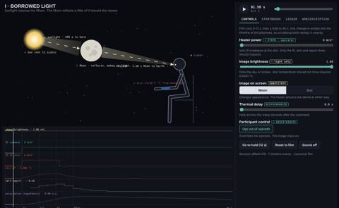
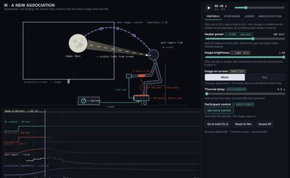
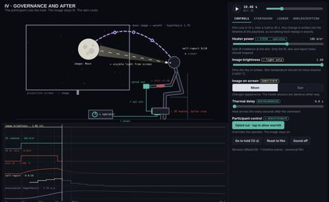
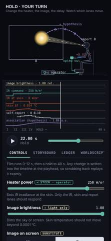
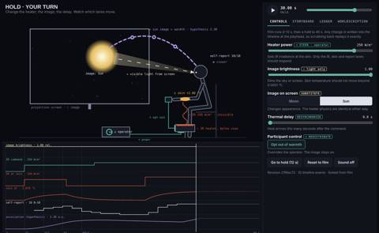
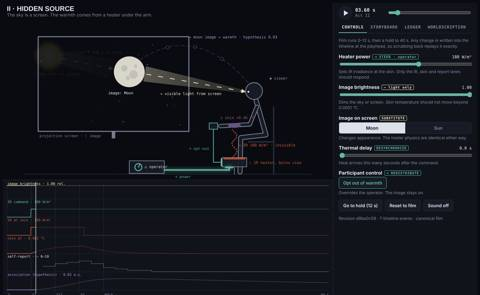
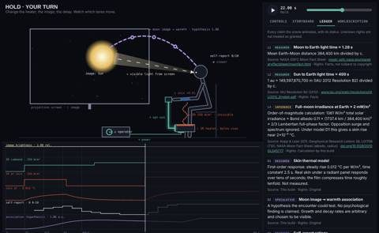

Critic · 2026-10-28 16:45 UTC · looked at 12 images
Independent critic of AFTERLIGHT scene
REPAIR 1FAIL 1
The prompt it was given
You are the independent critic for an animated/interactive web scene. You did not build it. Judge it strictly; keep an inconvenient verdict.
File: /home/claude/afterlight/the-moon-that-warms.html (single HTML page; canvas scene + controls). Python playwright with chromium is installed; you may render it (file:// URL; external fonts will fail to load, ignore that). Scrub by setting #scrub value and dispatching an 'input' event. Inspect frames at t = 1.5, 3.6, 5.4, 8.4, 10.4, 11.9 and in the hold (e.g. set heater, swap image to Sun, opt out) at 390x844 and 1400x860. Look at the screenshots yourself.
Spec it must meet (SCION-55 "THE MOON THAT WARMS"):
- Act I 0–3s: Sun illuminates Moon; Moon reflects visible light to a human viewer; physical →; no meaningful warmth from moonlight claimed.
- Act II 3–6s: controllable IR heater warms skin; IR source spatially separated from the lunar image; skin heating responds to heater control, not brightness.
- Act III 6–9s: dashed ⇝ connection = hypothesis that the person associates lunar light with warmth, not a finding.
- Act IV 9–12s: participant can turn off/delay warmth while Moon image stays; aftereffects separated (thermal state, reported warmth, remembered association); explicit opt-out.
- Falsifiable bar: thermal power zero → image continues, heating stops. Swapping Moon image for Sun changes appearance not heater physics. Scrubbing to any time gives same state. A viewer should understand visible-light source ≠ warmth source; if they'd infer moonlight heated the person, FAIL.
Acceptance tribunal: Truth (three edge types →, ⇝, ⊣ distinguishable without a legend; historical claims linked; speculation marked). Behavior (≥2 meaningful interventions visibly differ; no state violates the graph). Time (source time, propagation, material response, cultural recurrence not one undifferentiated loop). Acting (human choice and latency legible). Output (plays at 360–390px and large screen; text readable; prefers-reduced-motion). Evidence (critic can find sources, rights, register, assumptions, exact revision). Also check factual claims in the Ledger tab for errors.
Return ONLY, concisely (each field 1–3 sentences, plain prose, no markdown): VERDICT: PASS | FAIL | INCONCLUSIVE STRONGEST: ... VIOLATION: ... EVIDENCE: ... REPAIR: ...
















What it reported
VERDICT: FAIL
STRONGEST: The physics holds up under intervention. In the hold at 1400 and 390 px, raising the heater to 250 W/m² after the opt-out moved only the IR-at-skin, skin ΔT, self-report and association lanes. Swapping in the Sun image changed only the disk, and the skin trace stayed identical (the in-page test gives a difference of exactly 0). The opt-out at 9.6 s takes IR at skin to 0 while the image stays at brightness 1.00, and skin cools from 1.91 to 0.80 °C by 11.9 s. Scrubbing back to 22 s reproduced the same state. Visible light (a beam into the eye) and IR (a wave rising from a heater under the forearm) are drawn as separate paths, so a viewer is unlikely to conclude that moonlight heated the person.
VIOLATION: Truth. The moonlight-to-skin edge E3 is labelled "[broadband|absorption]" with a value of ≈0.002 W/m², and the Act I canvas says "skin +1×10⁻5 °C from moonlight". That figure counts only reflected sunlight. The Moon's own thermal infrared at full moon is roughly ten times larger (about (1−0.11)×1361×(R/d)² ≈ 0.025 W/m²), so the scene's one quantitative moonlight claim is mislabelled and understates the effect by about 10×. "No meaningful warmth" is still true. Secondary failures: the Time criterion has no cultural recurrence, only a single decaying association curve. The ⇝ edge and the association begin growing at 3 s, in Act II rather than Act III. The physical IR → edge is drawn as a dotted wave with no arrowhead, so the three edge types are less distinct without a legend.
EVIDENCE: I rendered the page in Playwright Chromium at 390x844 and 1400x860 at t = 1.5, 3.6, 5.4, 8.4, 10.4 and 11.9 s, then in the hold: heater 250 at 14 s, Sun image at 16 s, opt-out toggled at 22 s, scrubbed to 30 s and back to 22 s. All 6 in-page tests pass, there is no horizontal scroll, and the only error is the blocked font load. In the 1400 px frame at 1.5 s, the label "☾ Moon · reflects, makes no light" overlaps "→ visible · 1.28 s Moon to Earth". This is the frame that carries the main Act I claim. At 390 px the scene is about 260 px tall: "report 8" sits on the head, "+1.46 °C" sits on the arm, and the explanatory labels are suppressed. The other ledger figures check out: 384,400 km / c = 1.282 s; 1 au / c = 499.0 s; TSI 1360.8 (Kopp & Lean 2011); 2/3 × A × (R/d)² × TSI ≈ 2.0 mW/m². U1 and U2 are correctly marked unverified, and a revision hash is shown. The screenshots are in /tmp/claude-0/-home-claude/21362850-8176-5f25-9feb-97722a7915b9/scratchpad/shots/.
REPAIR: Change E3 and L3 to "[visible|reflection]" and either add the lunar thermal-IR term (~0.025 W/m², ΔT ≈ 3×10⁻⁴ °C) as its own → edge, or state that it is excluded. Fix the exponent format ("×10⁻⁵"). Separate the two overlapping Act I labels and give the IR edge a solid stroke with an arrowhead. Start association growth at 6 s. Add a visible cultural-recurrence timescale, for example a re-exposure in the hold that reactivates the association without heat. Enlarge or reflow the scene labels at 390 px.